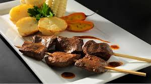

Anticuchos

Description:
Anticucho is a traditional South American dish, especially popular in Peru. It consists of marinated meat, usually beef heart, grilled on skewers. The meat is seasoned with spices like garlic, cumin, and aji panca (a type of chili pepper), giving it a smoky and flavorful taste. Anticuchos are often served with boiled potatoes or corn and are commonly sold by street vendors.
Ingredients:
- Beef heart
- garlic
- cumin
- aji panca
- salt
Steps
- Clean and Cut the Meat: Trim the beef heart (remove fat and membranes) and cut it into bite-sized cubes.
- Prepare the Marinade: In a bowl, mix the aji panca paste, garlic, vinegar, cumin, salt, and pepper. Stir well to combine.
- Marinate the Meat: Add the meat cubes to the marinade. Mix until all pieces are coated. Cover and refrigerate for at least 4 hours (overnight is best for full flavor).
- Soak Skewers (if using wooden ones): Soak wooden skewers in water for about 30 minutes to prevent burning on the grill.
- Assemble the Skewers: Thread the marinated meat pieces onto the skewers.
- Grill the Anticuchos: Preheat the grill or grill pan over medium-high heat. Lightly oil the surface. Grill the skewers for about 2–3 minutes per side, or until nicely charred and cooked through.
- Serve and Enjoy: Serve hot, traditionally with boiled potatoes or corn on the cob, and optionally brush with a bit of leftover marinade while grilling for extra flavor.